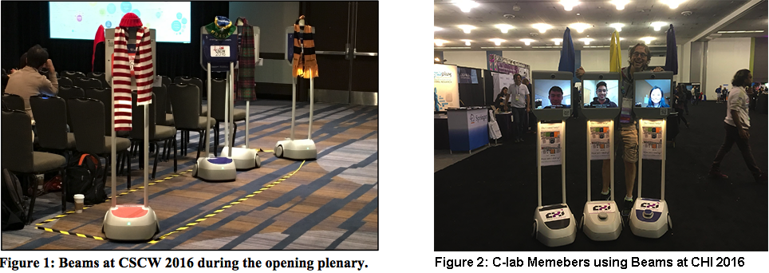

Telepresence Beams: Remote Telepresence Attendance for Academic Conferences

Description
Attending conferences remotely via telepresence robots called Beams. A study at CSCW2016 to understand if and how telepresence robots would support remote conference attendance, we will explore the dedicated and time shared model. Explore the benefits, considering new mechanisms to allow remote attendees to represent their identity within the robot and what social and technical limitations exist.
Role
Data Collection
Data Analysis
Team
John Tang
Carman Neustaedter
Ray Pan
Yasamin Heshmat
Azadeh Forghani
Publications:
Carman Neustaedter, John Tang, Samarth Singhal, Rui Pan, Yasamin Heshmat, Azadeh Forghani (2017) Telepresence Attendance at the ACM CSCW 2016 Conference, Connections Lab Technical Report 2017-0419-01, Simon Fraser University.
Carman Neustaedter, John Tang, Samarth Singhal, Rui Pan, Yasamin Heshmat, Azadeh Forghani (2017) Telepresence Attendance at the ACM CSCW 2016 Conference, Connections Lab Technical Report 2017-0419-01, Simon Fraser University.
CHALLENGE
Telepresence attendance at academic conferences is now a reality where we are beginning to see conferences explore remote attendance via telepresence robots. While the experience is possible, we still have only an initial understanding of how attendance via telepresence robots should be best organized and designed, and how this effects the experience of the remote attendees. To date, telepresence attendance at academic conferences has typically focused on very small numbers of remote attendees (e.g., no more than seven) and a limited range of activities (e.g., only conference talks).
PROCESS
Research GoalsAs part of the ACM Conference on Computer Supported Cooperative Work and Social Computing 2016 (CSCW), we studied telepresence attendance to gain a deeper and more nuanced understanding of remote conference attendance via telepresence robots (Figure 1). CSCW 2016 had approximately 750 in-person attendees and contained weekend workshops and a doctoral consortium, three days of conference talks across five parallel sessions, a demo and poster reception, and a conference reception. The goal of our study was to explore how remote attendees participated in conference paper sessions, breaks, workshops, and receptions using BeamPro telepresence robots.

Data Collection and Analysis
A. Observations
I observed the remote attendees throughout the conference, during sessions, breaks, and at the demo reception. During these sessions, observers took notes about where the Beam parked, how they moved through the session, whether or not they asked questions, and if and how they interacted with people. I recorded images and videos at various points to capture the different types of setups and interactions that occurred.
B. Semi-Structured Interview
To gain detailed feedback on their experience, we conducted interviews with each remote attendee within several days of the end of the conference over Skype. Our interview questions focused on Beam personalization, Beam sharing, navigation using the colored maps and balloons, social interactions, and potential privacy concerns. In addition, we interviewed one workshop organizer (O1) to understand her experience of having a remote attendee in the workshop. All interviews were audio-recorded and transcribed. We used thematic analysis to understand the main themes within our data. This involved multiple reviews of interview transcriptions and meetings amongst the paper authors to discuss their observations.
C. Backchannel Messaging
We kept logs of the messages in the Skype backchannel and performed coding on a per-message basis to identify the type of content in the message (e.g., technical question, social comment). We also coded each message according to who was the sender and the (most likely) intended recipient (e.g., support staff, another remote attendee, everybody in the chat channel). Our goal was to understand the main uses of the backchannel and what types of conversational exchanges occurred
D. Post-Conference Survey
As part of the general conference survey, we asked local attendees for their feedback on the telepresence setup. Questions focused on people’s first reactions to the Beams, their impression at the end of the conference, how they felt about shared vs. dedicated Beams, what value they saw in having the Beams available for the different conference activities (e.g., talks, receptions, workshops), and what they would change, if anything, for future conferences.
OUTCOME
In this study, we explored a broader set of participation across conference events and an increased numbers of participants. We also explored a differing telepresence setup, which included the use of both dedicated and shared telepresence robots. Together, these differences allowed us to explore a broader set of circumstances.
We found similar challenges for remote attendees at CSCW
2016 when compared to Ubicomp/ISWC 2014. In this
way, our work validates prior study results with increased
numbers of participants and conference activities (e.g.,
receptions, breaks). Similarities included difficulties
navigating in tight spaces; difficulties seeing presentation
slides unless one was parked near the front of the room;
challenges using eye contact and body language when
communicating during breaks; a lack feedback of audio
levels; additional social attention because of the novelty of
the Beams; and, privacy issues from local attendees being
able to see into remote attendees’ homes.
Second, we found important differences with past research that were elucidated by having broader remote participation at CSCW. The remainder of our discussion focuses in on these findings and their implications for future telepresence attendance at academic conferences along with corresponding design implications.
We made personalization a requirement at CSCW and, for those who did not choose to personalize, we added a default personalization (colored balloon). This largely worked well, yet the setup also created challenges. Personalization was done through physical objects as opposed to digital ones. This made them highly noticeable but increased work for remote attendees and support staff, given the number of remote attendees.
Appropriation: We had imagined that telepresence attendance would follow a model of participation that we had established as the telepresence organizers. However, it was evident very quickly that telepresence attendance was much more about appropriation and allowing the remote attendees to decide how to best make use of the opportunity that Beams afforded them. The implication is that telepresence attendance should be considered a flexible option to support a multitude of different situations. This suggests that a ‘one size fits all’ model is not good enough when it comes to the design of telepresence robots.